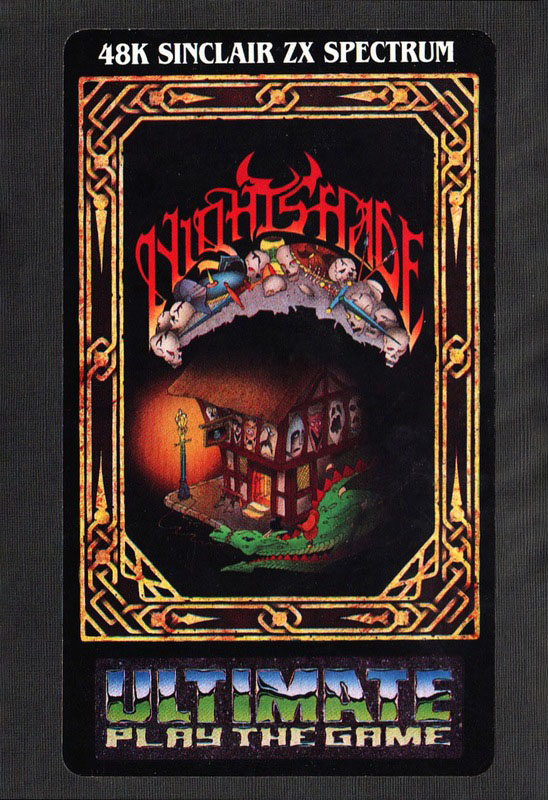
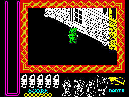
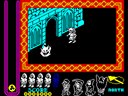
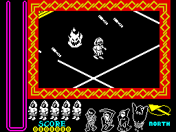

Nightshade


{kind=link}

| Publisher: | Ultimate |
| Price: | £9.99 |
| Year: | 1985 |
| Source: | CRASH, Issue 21 |

Many moons ago in a hidden valley between the purple mountains and the seas of the Seven Islands there was a great calamity: darkness descended upon that land, evil overran all that was good and death and hunger spread. Those who remained became twisted and striken with evil and the village in that valley became possessed with powers so black that nobody dared enter.
Years later the story became legend and only the songs and tales remained of those who had tried to enter the valley never to return... for those who trespass into the village become enslaved by the immense power of the evil Overlord.

After listening to the story of the battle with the forces of evil in the Nightshade village one night, you decide to set off down the valley... and thus the scene is set for the latest Ultimate game.
Nightshade is yet another arcade adventure utilising similar ‘Filmation’ programming techniques to those in Knight Lore and Alien 8. This gives a realistic 3D panoramic view of what’s going on around you.
The program differs from the last two games in that the scenery scrolls rather than ‘flicks’ as you move from one location to another and there are no objects which you can shunt about and use whilst playing.
The game itself is set in a typical mediaeval village, complete with ancient looking houses, streets, barns, churches and the like. As you walk down the streets you can see the facias of the buildings in detail, with walls, gables and windows. If you like the look of a building then you can enter it through its door. When you do so the front of the building will disappear showing what is behind — useful as it lets you see what you’re doing.

Most of the buildings are connected so you can travel from one to the other by moving through the series of doors and rooms inside. Many of the buildings also have back doors allowing you to go through to the street behind.
Throughout the village there are loads of marauding thingies which rush after you and try to take one of your five men. Each man can be hit three times by a nasty, the fourth touch will result in him being lost. When you start with a new life he is white, when hit again he turns yellow, then green; the next touch after that turns him into a puff of smoke and he disappears.
The marauding thingies are all excellently animated and vary from small jelly like bacteria which slide along the ground to huge gremlin types which give chase waving their arms and generally disport themselves in a loathesome and revolting manner.
Your man looks a little like the knight from Atic Atac and he’s extremely well animated as he wanders about. There are some nice touches too: for instance when he bangs into a wall he puts his hands up to protect himself. He’s not defenceless either and can throw things at the nasties to protect himself as he travels around. These ‘antibodies’ (varying from sticks to what looks like the end of a mace) can be picked up from the rooms of just about any building. Running over them will automatically put them into a tube at the side of the screen. The tube only holds a limited number of objects so it has to be replenished very regularly to increase your (very slim) chances of survival. There are extra lives which can be picked up and there are also boots which, when collected, allow you to run at high speeds for a short while.

When you throw an antibody at a nasty it doesn’t always kill it straight off. Some of the bigger ones need to be shot several times with an antibody. The gremlin, for example, splits into two smaller creatures which again have to be shot. The smaller creatures then turn into a bubbling mess which still gives chase until shot for the final time. Thankfully you don’t have to go through this rigmarole every time you shoot something — most, like the flames, smaller sliding things and squat, toad-like creatures die immediately after being shot once.
The object of the game is to find and pick up the four super antibodies (bible, hammer, cross and egg timer). Once found you have to track down the four evil characters which run the show (the monk, the skeleton, the ghost and Mr Grimreaper) and throw the correct super antibody at it. If you can do that then the village will be freed from the evil which has ruled there for so long and everybody will live happily ever after... until the next Ultimate game, anyway!
CRITICISM
‘An Ultimate game is always something to look forward to — just wondering what it will be like is fun in itself. While loading I read the usual obscure Ultimate instructions which gave absolutely no hints; as with all the other Ultimate games the idea behind it is to find out what on earth you have to do! Nightshade is well up to their usual standards but unlike Knight Lore and Alien 8 it does not set new standards in programming. The idea of using the walls which flick out when you enter a building is a very good one but it tends to leave the screen rather blank. The graphics of the nasties and the village are very good with only a few attribute problems. Colour has been used effectively along with sound but don’t expect anything too outstanding. Nightshade is likely to appeal to the younger games player or to people who are fed up with the latest state of arcade/adventure/strategies and want to play a simple game where you don’t have to worry about how to crack certain codes etc. Overall it is a very good game with excellent graphics which makes a welcome change from all the complicated stuff which is being forced on us.’
‘After Knight Lore and Alien 8 I wondered how far Ultimate could stretch the limitations of the Spectrum. It’s now obvious that they’ve just about reached its peak — Nightshade doesn’t differ much from the last two, and in fact I must say that I’m pretty disappointed with it. There aren’t any objects you can jump round or shunt about, making the whole game seem rather flat and uninspiring. The game itself isn’t too difficult — once you’ve got used to playing huge scores are easily reached. I can’t really see it posing as many problems as Alien 8. Still, the game’s bound to be a smash and even if it does sometimes rely on cheating (materialising a nasty on top of you so you can’t do anything) it’s good fun to play.’
‘Nightshade is as I’d expect it to be. Yet another technically brilliant game from Ultimate. The graphics are stunning, cleverly using high resolution detail to good effect. Making the characters large enough to kill any attribute problems but still cramming them with detail is a good idea. The smoothness of the scrolling window was amazing for the amount of detail packed into it; there’s been nothing like it yet on the Spectrum. Controlling the main sprite was a lot easier than controlling Sabreman in Knight Lore because of the new option for directional control. A great little touch was the cautious look over the shoulder our hero gives himself after moving off. The thing that confused me was the actual object of the game: ‘oh, we can’t tell you that’ said a helpful voice at Fortress Ultimate in answer to our enquiry. I was also told, when asking how large the playing area was, ‘It’s pretty large’. All in all I can’t say that I was as impressed as I have been in the past. I think compared to earlier releases it’s lacking in playability. Nightshade is still very good though, and technically a lot better than anything else for the Spectrum.’
COMMENTS
| Control keys: | X/V/N left, C/B/M right, A/S/D/F/G forward, Q/W/E/R/T fire, CAPS SHIFT/BREAK SPACE pause |
| Joystick: | Kempston, Cursor, Sinclair |
| Keyboard play: | Responsive |
| Use of colour: | Excellent |
| Graphics: | Excellent |
| Sound: | Good |
| Skill levels: | One |
| Lives: | Five |
| Screens: | A closely guarded secret, it seems |
| General rating: | Not quite up to Ultimate’s usual standards but still a truly excellent and absorbing game |
| Use of computer: | 82% |
| Graphics: | 94% |
| Playability: | 92% |
| Getting started: | 74% |
| Addictive qualities: | 86% |
| Value for money: | 90% |
| Overall: | 91% |